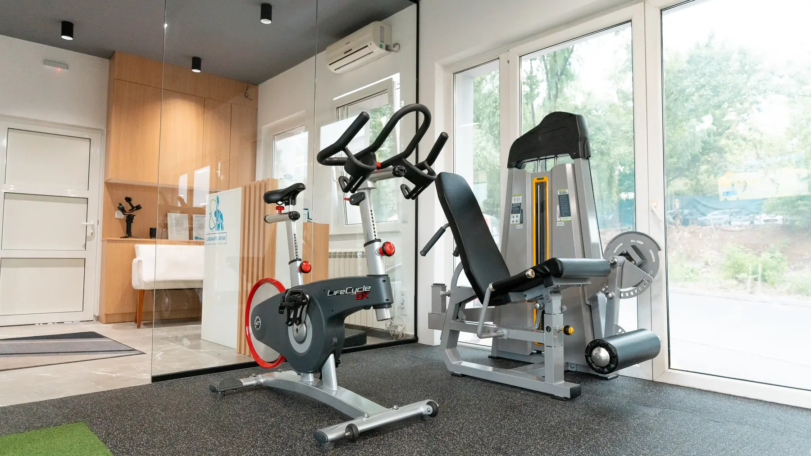

Ligamenti, meniskus, hrskavica
Rekonstrukcija prednjeg ukrštenog ligamenta, bočni ligamenti, operacija meniskusa, oštećenje hrskavice, prelom čašice.
USLUGA 05 · KORAK PO KORAK
Kontrolisan povratak pokretu, u fazama i tempom koji telo podnosi. Od prvog dana posle operacije.

■ ŠTA JE OVO
Operacija rešava strukturu. Funkciju vraća ono što dolazi posle nje. Zašiven ligament nije isto što i koleno u koje se opet može verovati.
Rad ide u fazama i svaka ima svoj cilj i svoju granicu. Preskočena faza je najčešći razlog zašto oporavak stane na pola — telo naplati svaki korak koji nije bio spreman.
Program se pravi prema vrsti operacije i uputstvu hirurga, ne prema kalendaru. Nedelje su orijentir; kriterijumi su ono što stvarno odlučuje.
Operacija je iza vas. Sada je pitanje kako se vraćate.

Kada se operacija zna unapred, telo se priprema. Ojačana muskulatura pamti osećaj snage i stabilnosti, pa je posle zahvata lakše vratiti pokret nego ga učiti iz početka.
Cilj je da tkivo zaraste kako treba: rasterećenje operisanog segmenta, pravilna aktivacija mišića i održavanje opšte kondicije, da se ne izgubi sve ostalo dok jedan zglob miruje.
Normalan hod bez pomagala, stepenice, ustajanje, posao. Uporedo se muskulatura priprema za opterećenja koja tek dolaze.
Postepeno uvođenje specifičnog treninga, prilagođenog vašem sportu i nivou na koji se vraćate. Ovo je faza koja se najčešće preskače — i najčešće košta novom povredom.
Rekonstrukcija prednjeg ukrštenog ligamenta, bočni ligamenti, operacija meniskusa, oštećenje hrskavice, prelom čašice.
Ruptura rotatorne manžetne, ruptura labruma, artroskopija i oporavak posle preloma u predelu ramenog zgloba.
Oporavak posle operacije potpune ili delimične rupture. Faze su ovde strože nego drugde — tetiva ne oprašta preuranjeno opterećenje.
Laminektomija, discektomija, spinalna fuzija i prelomi pršljenova. Rad kreće od kontrole trupa, pre nego od snage.
Ako vaš zahvat nije na spisku, to ne znači da ne možemo. Otpusna lista i uputstvo hirurga su dovoljni da se vidi šta je moguće.

Prelazak u sledeću fazu ne određuje kalendar nego kriterijumi: obim pokreta, snaga u odnosu na zdravu stranu i stabilnost pod opterećenjem. Kad ti brojevi stoje, ide se dalje. Kad ne stoje, čeka se — i to nije kašnjenje.
Postoperativna rehabilitacija nema svoju grupu u cenovniku. Ovde su prikazane cene terapijskog dana i REHAB paketa, jer se oporavak posle operacije kroz njih i sprovodi — ali to treba da potvrdi klijent. ZA POTVRDU
Rehabilitacija može da počne od prvog dana posle zahvata — u toj fazi je posao da tkivo zarasta kako treba, a ne da se vežba. Tačan trenutak određuje uputstvo hirurga.
Program se pravi prema protokolu koji je hirurg dao, a kod nejasnoća se traži njegovo mišljenje pre nego što se ide dalje. ZA POTVRDU
Zavisi od zahvata, od toga u kakvom ste stanju bili pre njega i od cilja — povratak na posao i povratak u sport nisu isti zadatak. Okvir dobijate na prvom pregledu, a koriguje se prema tome kako telo odgovara.
Nije kasno. Kreće se od testiranja gde je oporavak zastao — najčešće je to faza koja nikad nije zatvorena do kraja — pa se odatle nastavlja.